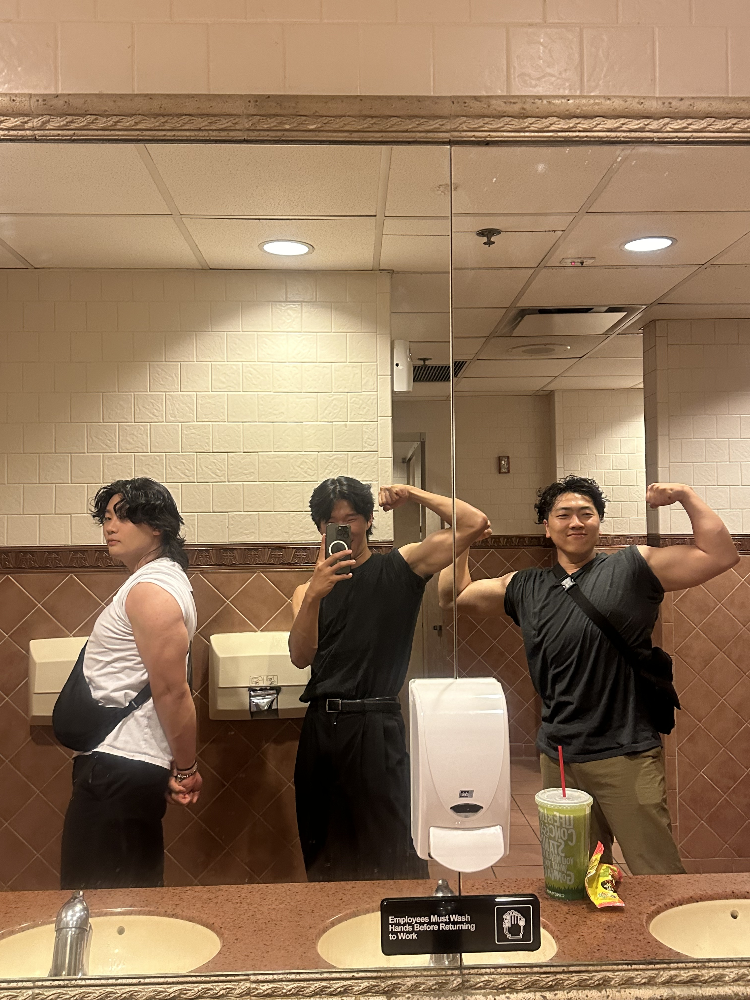
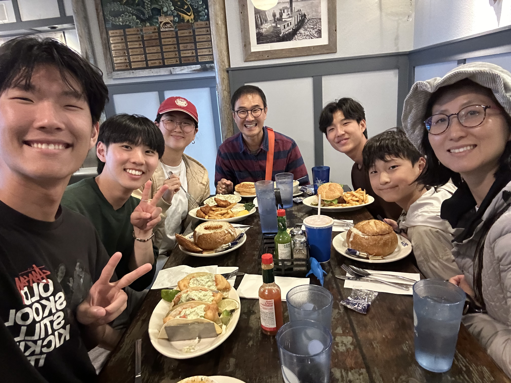
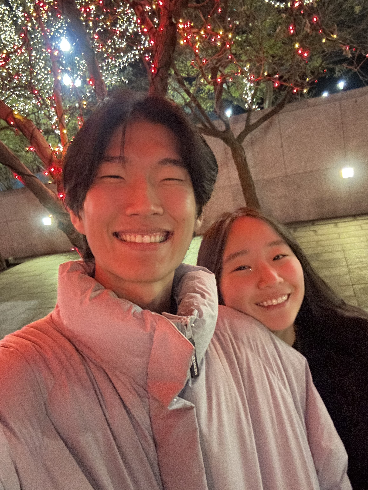
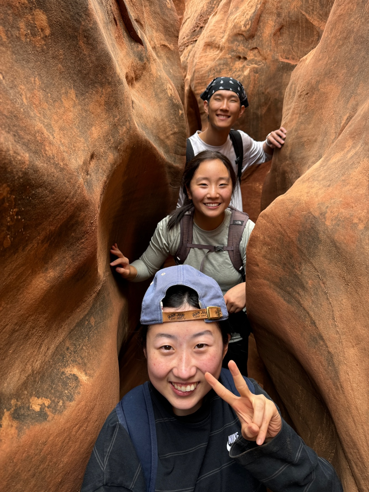
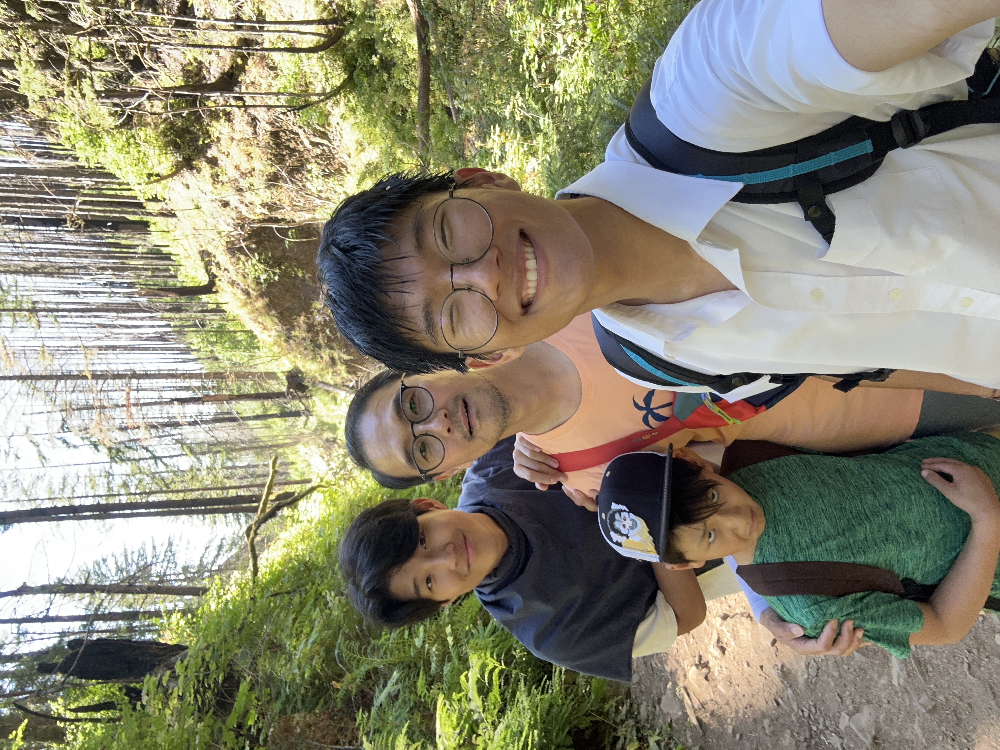
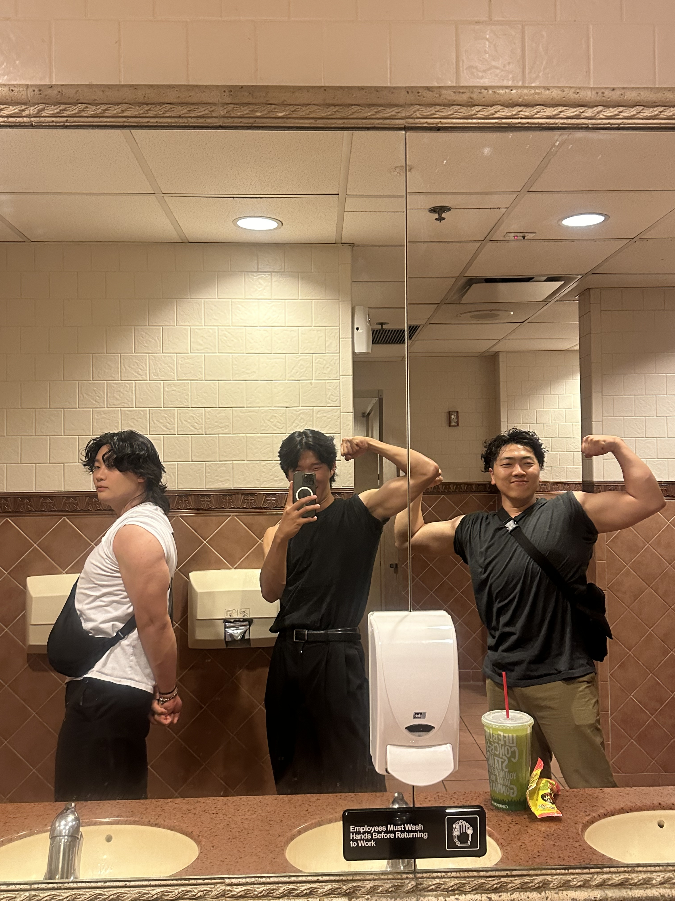
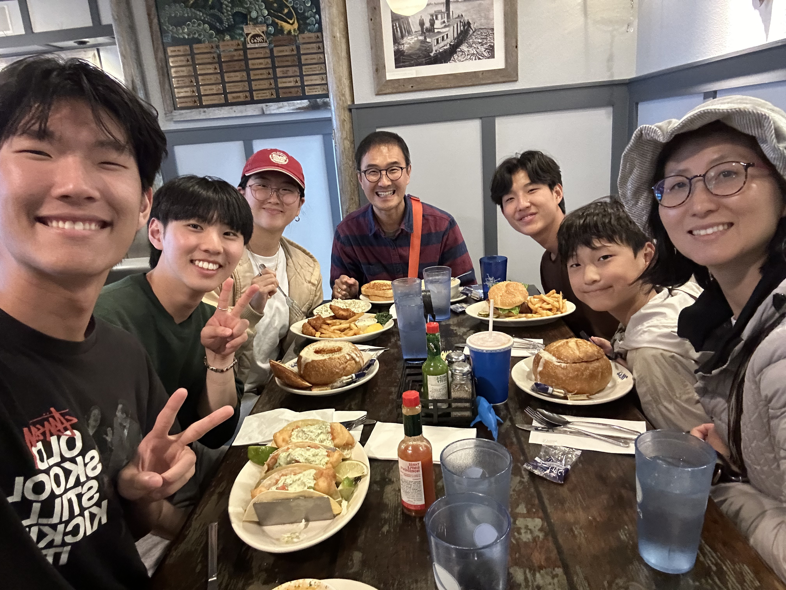
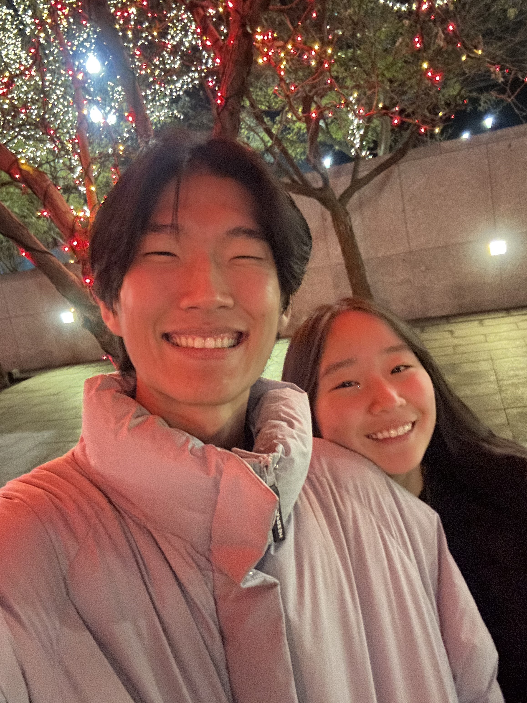
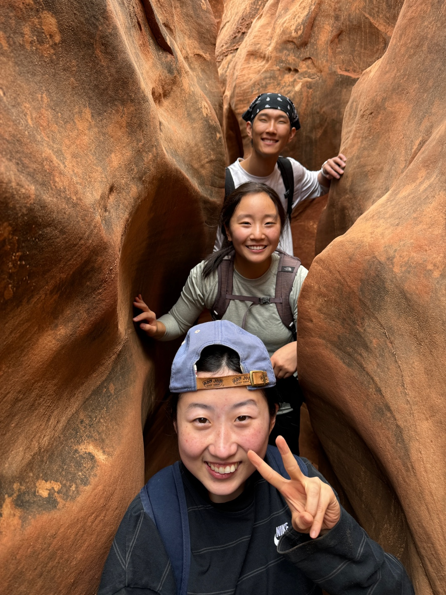
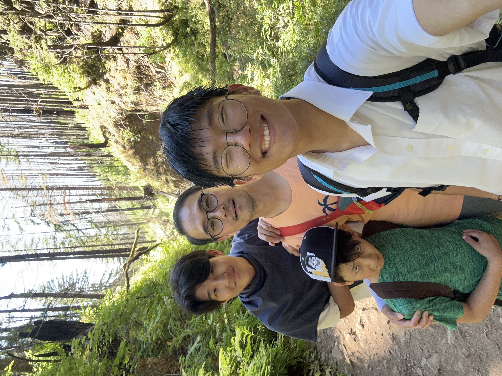

What's up! I'm Kalo and I'm a student at Brigham Young University.
Currently I'm studying computer science and I'm learning about software engineering and hopefully AI.
I'm the eldest son, the mighty firstborn of my family phew* what a big responsibility hahaha!
This personal website is one of my very first individual projects!
Those who know me would know that I have a very outgoing personality. I love joking around and laughing with people with good vibes. Even though I'm naturally a introvert I still love to be around people. The more friends I have with me the merrier (Just give me space from time to time XD)! I have a strong belief that the people that you have around you is what makes life so extravegant and beautiful, and I'm a person who's been blessed with loyal friends, a loving family, and a beautiful girlfriend.
Outside of conjuring up code, I enjoy playing video games, eating good food, and traveling. Usually I'm playing a game called league of legends. I've been playing it for about 10 years now (I still suck haha ;_;). When I'm not sinking my mental and LP on summoner's rift I love eating! Currently my favorite food is hotpot, but who knows that might change as I try some new dishes. Oh! and I've been to some really cool places. Some of my favorites are Korea, Oregon, Canada, and Hawaii!
If you're reading this you're either my future employer or a friend of mine! Regardless, I'm glad to have
had the opportunity to introduce myself to you! I hope you've enjoyed getting to know a litte about me as well!
CYA~